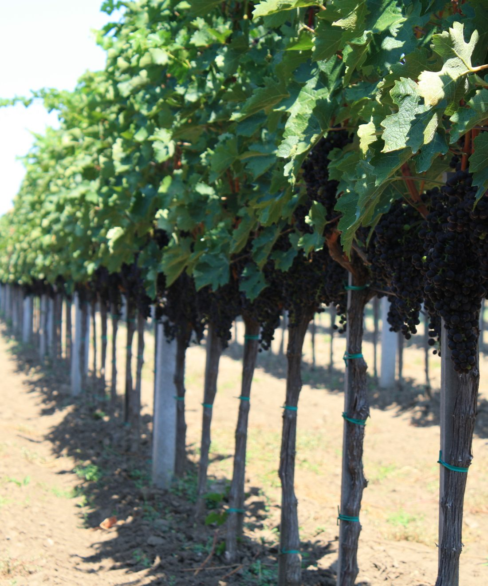
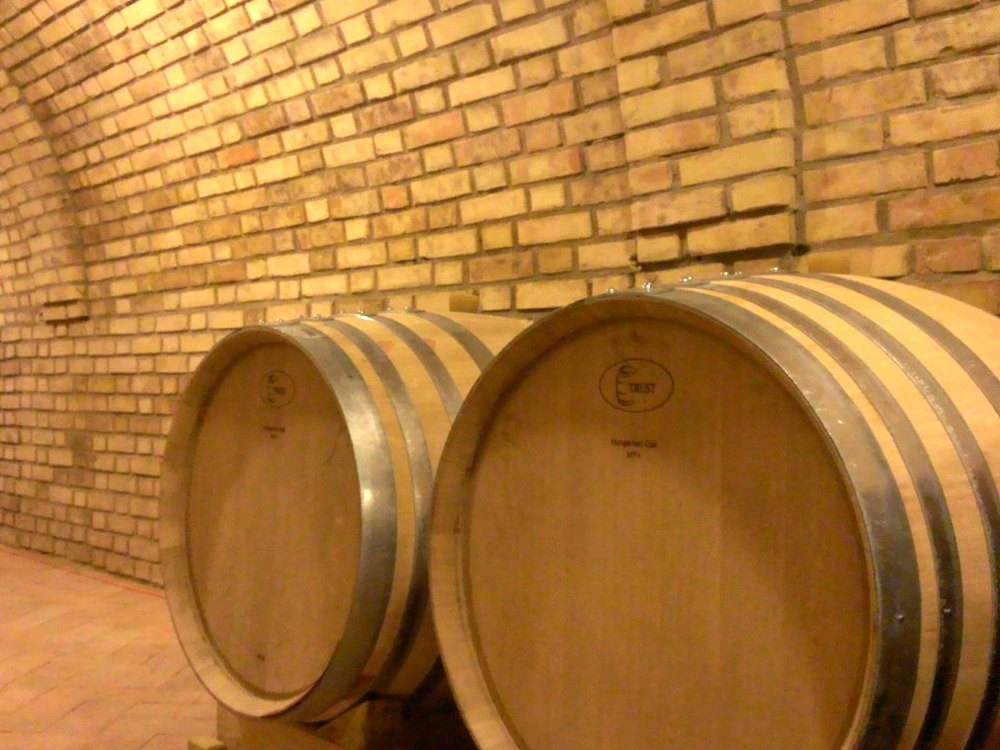
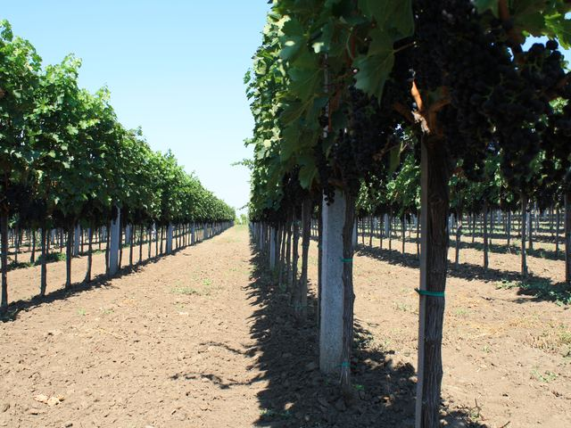
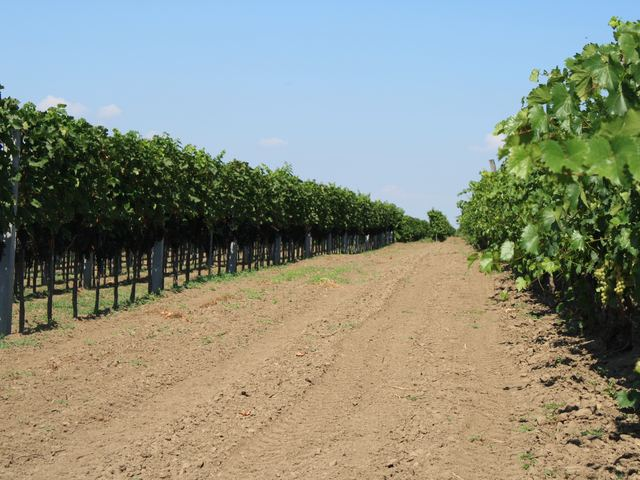
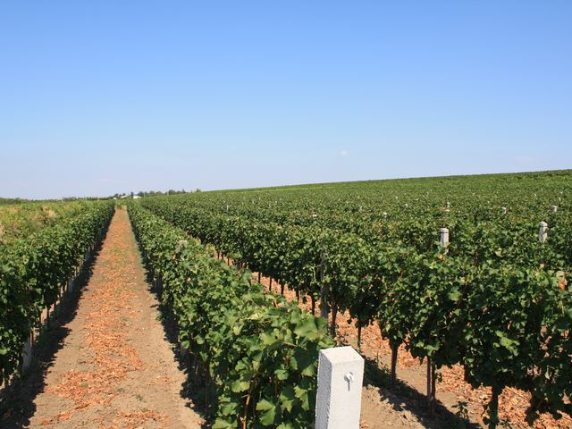
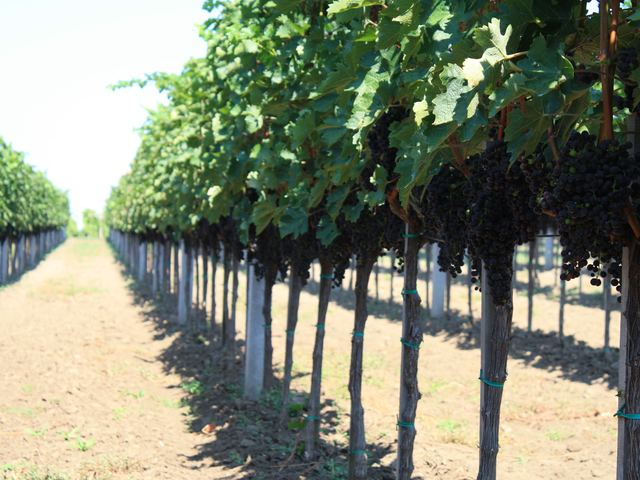
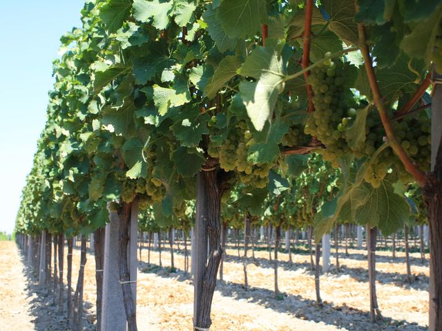
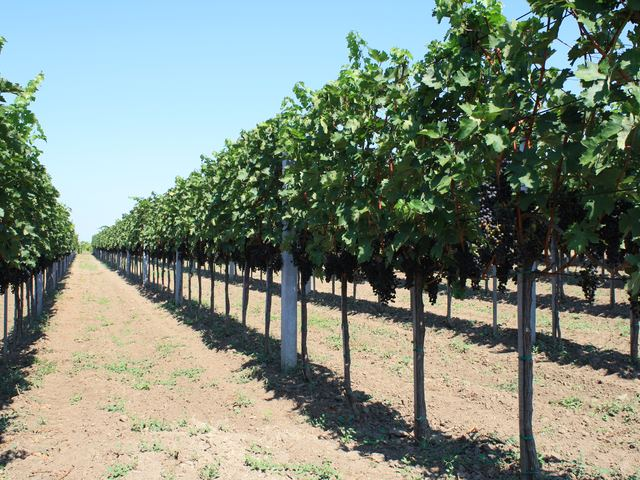

Bölcske · Tolnai borvidék
Ahol a tolnai löszdombok napfénye palackba zárva érik.
Egy korty Bölcske — egy korty otthon.
Rólunk
Molnár Attila borász három évtizede műveli családja szőlőit a bölcskei dombokon. Számára a borászat nem mesterség, hanem örökség: minden tőke, minden hordó és minden palack egy-egy fejezete a család történetének.
A pince igazi ékszerdoboz: a boltíves falakban a téglák ugyanolyan precíz gondossággal simulnak egymásra, ahogyan odakint a szőlőültetvények sorai követik egymást a domboldalon. Ami bent a kéz munkájának rendje, az kint a természet és az ember közös ritmusa — ez a kettős harmónia kóstolható meg minden pohár borunkban.
Kis tételben, kézi szürettel és türelmes hordós érleléssel készítjük borainkat, mert hisszük: az igazán nagy borokhoz nem nagy mennyiség kell, hanem nagy odafigyelés.


Galéria
Pillanatképek a bölcskei dűlőkről — a rendezett sorok, az érő fürtök és a nyári fény, amely minden palackunkban visszaköszön.






Borkatalógus
Minden palackunk a bölcskei dombok karakterét őrzi — kézi szürettel, kis tételben, nagy gondossággal.
„A bor a táj lelke palackba zárva —
mi csak vigyázunk rá, míg a pohárba ér.”
Molnár Borpince · Bölcske
Élmény
Fedezze fel borainkat ott, ahol születnek: a százéves boltíves pincében, gyertyafénynél, házi sajtfalatokkal kísérve. A kóstolókat Molnár Attila személyesen vezeti.
Hamarosan e-mailben visszaigazoljuk a részleteket.
Kapcsolat
Cím
7025 Bölcske,
II. Csordaúti pincesor 10.
Tolna megye
Nyitvatartás
Bölcske, II. Csordaúti pincesor
Megnyitás térképen